2-Paraformer-Fast and Accurate Parallel Transformer for Non-autoregressive¶
论文链接：https://arxiv.org/abs/2206.08317
开源代码：https://github.com/alibaba-damo-academy/FunASR
Transformer 使用自回归解码器逐个生成 tokens，在计算上是低效的。非自回归(NAR)方法可以提高推理速度。本文提出了一个快速准确的并联 Transformer，称为 Paraformer。首先，基于连续 integrate-andfire 预测器预测 token 的数量并生成隐变量；然后，扫视语言模型(glancing language model, GLM)采样器生成语义嵌入，以增强 NAR 解码器对上下文依赖建模的能力；最后，设计一种生成负样本策略用于最小词错误率训练，以进一步提高性能。实验验证所提出的 Paraformer 可以获得最先进的 AR Transformer 相当的性能，加速超过 10 倍。
一、引言¶
AED 模型的自回归解码器需要逐一生成 tokens，每个 token 都以所有先前的 tokens 为条件，解码在计算上是低效的，解码时间随着输出序列长度线性增加，非自回归的方式可以减小解码时间。
单步 NAR 工作主要集中在如何准确预测 tokens 的数量以及提取隐变量。与 AR 模型相比，单步 NAR 会犯很多替换错误，单步 NAR 有条件独立性假设，缺乏上下文的依赖性会导致替换错误的增加，本文旨在改进单步 NAR 模型，使其获得能与 AR 模型相当的性能。
本文提出了一个快速且准确的并联 Transformer（称为 Paraformer），解决了上述的两个挑战。首先，使用基于连续 integrate-and-fire 的预测网络估计目标数量并生成隐变量；其次设计了一个扫视语言模型的采样器模块，以增强 NAR 解码器对 tokens 相互依赖的建模能力；受到神经翻译的启发，设计了一种包括负样本的策略，通过最小词误差率训练提高性能。
Paraformer 在实现识别精度的同时，在大型语料库上获得 10 倍的推理速度提升。
二、方法¶
本文提出的 Paraformer 网络架构如图 2 所示。该架构由五个模块组成：编码器、预测器、采样器、解码器和损失函数。编码器与自回归编码器相同；预测器用于生成声学嵌入以指导解码；采样器根据声学嵌入和字符令牌生成语义嵌入；解码器是双向 AR 解码器；损失除交叉熵损失外，还与预测器的平均绝对误差(MAE)和 MWER 损失相结合，共同训练。
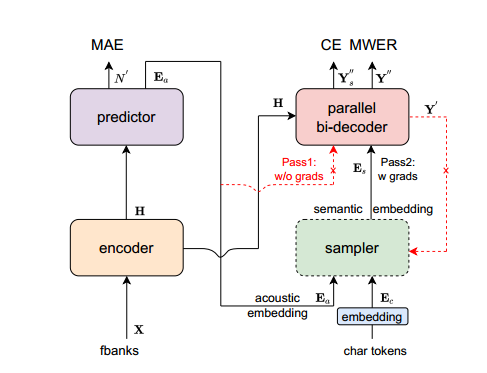
定义输入为 \((\bf X, \bf Y)\) ，其中 \(\bf X\) 表示帧数目为 \(T\) 的声学特征， \(\bf Y\) 表示令牌数目为 \(N\) 的目标标签。其中编码器将输入序列 \(\bf X\) 映射到隐藏表征 \(\bf H\) 。这些隐藏表征 \(\bf H\) 然后送到预测器预测令牌数目 \(N'\) 并产生声学嵌入 \(\bf E_a\) ，解码器在没有后向梯度下通过 first pass，将声学嵌入 \(\bf E_a\) 和隐藏表征 \(\bf H\) 生成目标预测 \(\bf Y'\) ，采样器在声学嵌入 \(\bf E_a\) 和目标嵌入 \(\bf E_c\) 之间采样，根据预测 \(\bf Y'\) 和目标标签 \(\bf Y\) 之间的距离生成语义嵌入 \(\bf E_s\) 。解码器在 second pass 采用语义嵌入 \(\bf E_s\) 和隐藏表征 \(\bf H\) 生成最终预测 \(\bf Y''\)，这一次具有后向梯度。最后对 \(\bf Y''\) 进行采样以产生用于 MWER 训练的候选，并在目标令牌数量 \(N\) 和预测令牌数量 \(N'\) 之间计算 MAE。MWER 和 MAE 在 CE 损失下联合训练。
在推理过程中，采样器处于非激活状态，双向并行解码器直接利用声学嵌入 \(\bf E_a\) 和隐藏表征 \(\bf H\) 仅在单个 pass 上预测最终输出 \(\bf Y'\) ，尽管解码器在训练阶段在前向操作两次，但由于单步解码过程，在推理过程中的计算复杂度并未增加。
2.1 预测器¶
预测器由两个卷积层组成，输出为 float 权重 \(\alpha\)，范围是 0-1。累加权重 \(\alpha\) 预测令牌数量，添加 MAE 损失用于指导训练，引入了 Continuous Integrate-and-Fire(CIF) 机制生成声学嵌入。CIF 是一种软单调对齐，用于 AED 模型的流式解决方案。为了生成声学嵌入 \(\bf E_a\)，CIF 累加权重 \(\alpha\) 并融合隐藏表征 \(\bf H\)，直到累积的权重达到阈值 \(\beta\)，表明达到了声学边界，这个过程如图 3 所示：
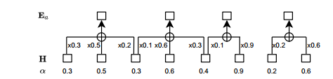
根据 [18]，在训练过程中，权重 \(\alpha\) 根据目标长度缩放，以便声学嵌入的数量 \(\bf E_a\) 与目标嵌入的数量 \(\bf E_c\) 相匹配，推理阶段权重 \(\alpha\) 直接用于产生 \(\bf E_a\)。因此，训练和推理之间可能存在不匹配导致预测器的精度下降，由于 NAR 模型比流式模型对预测精度更敏感，可以使用动态阈值 \(\beta\) 来减少失配：
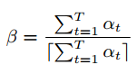
2.2 采样器¶
在 vanilla 单步 NAR 中，优化目标描述为：
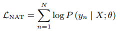
然而，如前所述，与 AR 模型相比，条件独立性假设会导致较差的性能。扫视语言模型可以定义为：
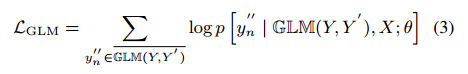
其中 \(GLM(Y,Y')\) 表示采样器模块在 \(\bf E_a\) 和 \(\bf E_c\) 之间选择令牌的子集，上面加一杠表示目标 \(\bf Y\) 内剩余未被选择的令牌子集。
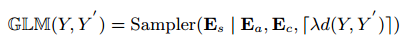
其中 \(\lambda\) 是控制采样率的采样因子，\(d(Y,Y')\) 是采样数，但模型未经训练时它会很大，其随着训练过程而减少，使用汉明距离定义：
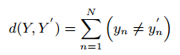
总之，采样器模块通过随机替换 tokens 进入声学嵌入 \(\bf E_a\) 和目标嵌入 \(\bf E_c\) 相结合，生成语义嵌入 \(\bf E_s\)。训练并行解码器根据采样的令牌预测具有语义上下文的目标 tokens，使得一个模型能够学习输出令牌之间的相互依赖性。
2.3 损失函数¶
定义了三个损失函数，即 CE、MAE 和 MWER 损失。这些损失联合进行训练：
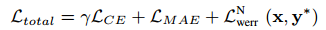
对于 MWER，可以表示为：
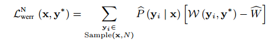
由于使用贪婪搜索解码，NAR 模型只有一个搜索路径。我们利用负采样策略，通过在 MWER 训练期间随机屏蔽 top1 得分令牌以生成多个候选路径。
三、实验¶
在开源 AISHELL-1、AISHELL-2 基准和 20000 小时工业普通话任务评估所提出的方法。在 NVIDIA Tesla V100 上评估推理速度。
AISHELL 数据集实验评估结果见表 1，RTF 在 ESPNET 上进行评估，没有使用外部语言模型和无监督训练。Vanilla NAR 与我们提出的 Paraformer 模型具有相同的架构，但没有采样器，然而，由于缺乏上下文依赖性，其性能略低于 AR，可以获得与 AR 模型相当的性能。推理速度(RTF)比 AR 基准快了 12 倍以上，取得在 AISHELL-1 和 AISHELL-2 任务中最先进的性能。
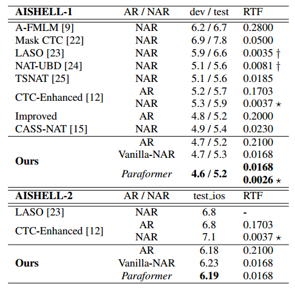
大量工业实验评估结果见表 3，其中动态 \(\beta\) 表示 2.1 节所述的动态阈值，CTC 指的是带有 LM 的 DFSMN-CTC-sMBR 系统，RTF 使用 OpenNMT 进行评估。
对于 41M 模型，发现 Vanilla NAR 的 CER 与 AR 模型的 CER 相差很大，但仍优于 CTC，两者都有类似的条件独立性假设，当应用 GLM 时，获得 13.5% 和 14.6% 的相对性能改进，进一步添加 MWER 训练，准确率略有提高。Paraformer 实现了与 AR 模型相当的性能，推理速度快了 10 倍，使用动态阈值可以进一步提升准确性，CIF 减少了推理和训练间的不匹配，以更准确提取声学嵌入。
在 63M 模型上评估时现象相似，Paraformer 再次实现与 AR 模型相当的精度，实现了 10 倍的加速。Paraformer 可以通过增加模型大小实现卓越的性能，同时保持比 AR 更快的推理速度。
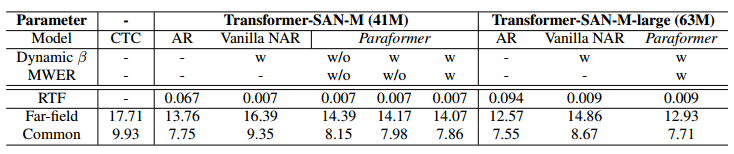
最后评估了采样因子如表 2 所示，采样器能给目标提供更好的上下文，识别精度会随着 \(\lambda\) 的增加而提高。然而，当采样因子太大时，它会导致训练和推理之间不匹配，因为在训练阶段解码两次，推理阶段仅解码一次，性能在 0.5 到 1.0 范围内对 \(\lambda\) 是鲁棒的。
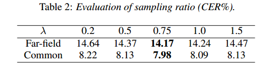
与 AR 模型相比，Vanilla NAR 在学术阅读语料库 AISHELL 任务上性能衰减较小，在大规模工业语料库衰减较大，工业语料库反映了更复杂的场景，这是首次在大规模语料库任务中探索 NAR 模型。
进一步分析 Paraformer 性能，我们统计了错误类型总数，即插入、删除和替换，并进行归一化。与 AR 系统相比，普通 NAR 插入错误略有增加，而删除错误略有减小，表明在动态阈值帮助下，预测器的准确性是优越的；然而，替换错误极具增加，这解释了它们在性能上的巨大差距，这是由 NAR 模型的条件独立性假设造成的，Paraformer 的替换错误相较普通 NAR 有所减小，这是性能改进的主要原因，GLM 使 NAR 模型能更好学习输出令牌间的相互依赖性。与 GLM 相比，AR 模型的波束搜索解码在语言模型中可以发挥强大的作用，是 Paraformer 和 AR 模型仍具有差距的主要原因。
为了消除这一剩余的性能差距，我们的目标是在未来的工作中将Paraformer与外部语言模型相结合。